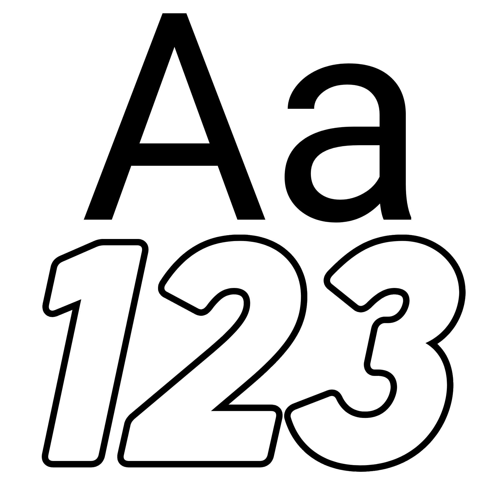

OPTIONS
Font:
Default
System
Custom
Bitmap
Import Custom Font...
Custom font is used for the clock display.
Size
<
3
>
Customize Style >
Colour Customization >
Global Settings
< Back
Clock Customization
24-hour clock:
Clock Mode:
SHOW ON CLOCK:
Hours
Minutes
Seconds
Ticks
AM/PM
Tick Rate:
10
20
30
40 (Default)
50
60
70
80
90
100
TPS
< Back
Colour Customization
RGB
HSV
HEX / CSS
R
G
B
H
S
V
Reset to Default